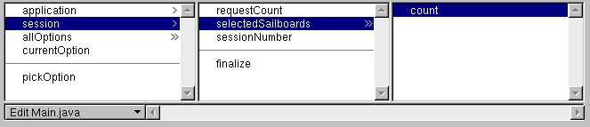

Table of Contents
Table of Contents  Next Section
Table of Contents
Next Section
Table of Contents  Previous Section
Previous Section
In the figure, you have added a form (WOForm) containing a dynamic text field (WOTextField) to your component. Note the triangle in the top left corner, which distinguishes the dynamic text field from a static HTML text field. The long rectangle surrounding the text field represents the containing form.
To bind the text field to the variable myVar:
A black line appears as you drag, and a black border appears around the text field, indicating that you can bind to it.
The Inspector for that element appears, listing its attributes. The value attribute is selected by default. (This attribute represents the value that the user enters into the text field.) If this isn't the attribute you wish to bind, click another attribute to select it.
The name of the variable appears in the Binding column next to the attribute. Note that it also appears inside the text field in the component window. Some (not all) dynamic elements display the binding for their default attribute inside the element itself.
The relevant page from the
Dynamic Elements Reference is displayed in your web browser.
Typically, you don't add attributes for standard dynamic elements such as WOTextField or WOString. You use this feature when working with your own custom WebObjects (see "Custom WebObjects").
This time, a different attribute is selected, since the default attribute has already been bound.
A cursor appears in the Binding column, allowing you to type.

Table of Contents Next Section